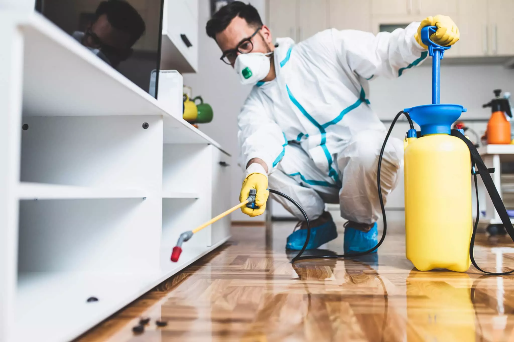

There’s nothing worse than unwelcome guests, especially the ones that scuttle, crawl, or buzz around. Whether it’s ants marching through your kitchen, raccoons rummaging in your garbage, or bedbugs settling into your mattress like they’re on a week-long vacation, one thing’s for sure: pests have no place in your home. If you’re in Brampton or the Greater Toronto Area (GTA), finding a reliable pest exterminator might just save your sanity.
If you’ve been living in Brampton or any part of the GTA for a while, you know that our weather doesn’t exactly help with keeping pests away. With humid summers, the insect population multiplies faster than you can say “exterminate,” and the chilly winters drive all sorts of critters inside looking for warmth—much like your distant relatives who come over uninvited during the holidays. The only difference is that these guests don’t leave until you take action.
Pest exterminators in Brampton and GTA aren’t just people with spray cans and bug zappers. No, these folks are the unsung heroes, the ones who restore peace to your home and give you the ability to sleep without worrying about a critter crawling across your face at 3 a.m.
Why deal with pests yourself when you can leave it to the pros? Here’s why calling in the experts is your best bet:
Let’s take a stroll through the pests that love calling Brampton and the GTA home. This may read like a horror story, but hey, knowing your enemy is half the battle, right?
Ants may seem harmless until you find a long line of them carrying crumbs from your kitchen. Brampton has carpenter ants (who destroy wood) and pavement ants, which love to invade homes after rainy weather.
Raccoons are like the bandits of the GTA, making a mess of your garbage bins and even finding a cozy spot in your attic. They're clever but not clever enough to outsmart a pest exterminator!
These tiny bloodsuckers are notoriously difficult to get rid of. They love hiding in mattresses and furniture and will feast on you while you sleep. An exterminator can help make sure they don’t stick around for long.
Rats and mice chew through wires, get into your food, and leave droppings everywhere. They're small but mighty when it comes to causing damage, and they reproduce quickly.
The ultimate survivors—cockroaches spread bacteria and love to hide in dark, damp places. Once you see one, there are likely dozens more nearby.
Wasps are aggressive and territorial. When they set up a nest near your home, it's best to let an exterminator deal with them before someone gets stung.
When you call a pest exterminator, here's what happens:
Even after the exterminator has worked their magic, there are a few things you can do to keep pests at bay:
When choosing a pest exterminator, look for companies that:
Dealing with pests in Brampton and the GTA isn’t fun, but with the help of a professional exterminator, you can send those unwelcome guests packing. Whether it’s ants, bed bugs, raccoons, or cockroaches, a pest control expert will know just what to do to make your home feel like home again. So, if you find yourself face-to-face with an uninvited guest (especially one with more than two legs), remember: you don’t have to go it alone. Just pick up the phone, call in the pros, and sleep tight—without worrying about anything biting!